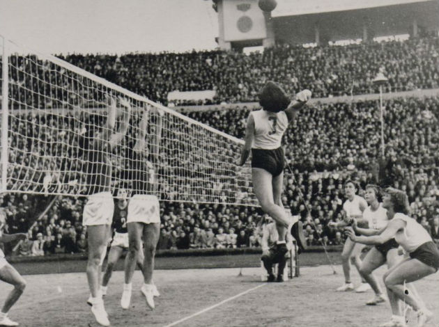

Volleyball was created in 1895 by William G. Morgan. He wanted to create a sport that involved teamwork but was less physically demanding than basketball.
The sport was originally called Mintonette. The name was later changed to volleyball because players volleyed the ball back and forth.
Volleyball is now played around the world at recreational, college, professional, and Olympic levels.